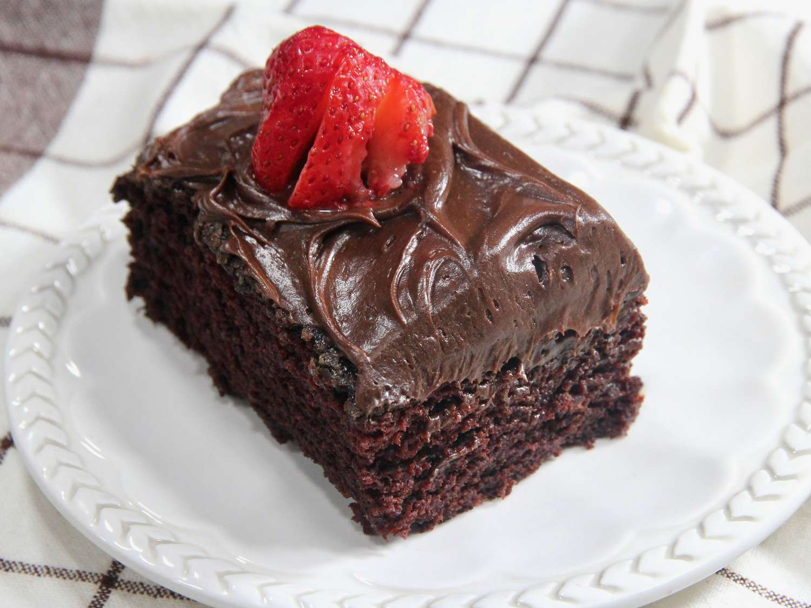
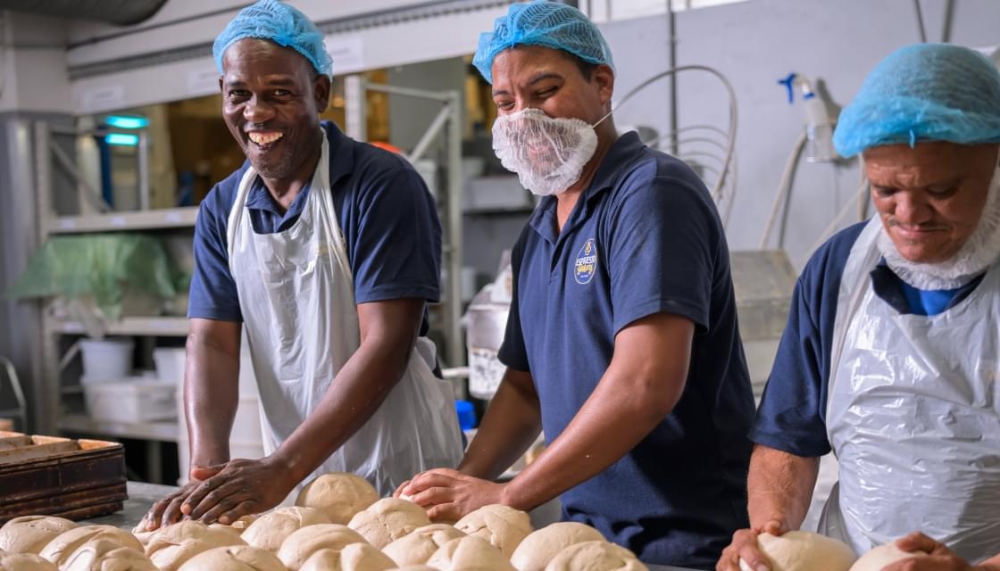

Our Story
Cloud Cakes was born from a tiny kitchen in Cape Town, where late-night baking experiments turned into a full-blown passion. What started as a single recipe for the fluffiest sponge cake slowly grew into a neighborhood secret — the kind of place where every bite felt like a hug from the inside out. Over the years, our little bakery transformed into a beloved destination for celebrations, comfort, and pure joy. Each cake we create carries a sprinkle of that same dream: to bring people together over slices of happiness, one layer at a time.
Mission & Vision
Mission: At Cloud Cakes, our mission is to craft desserts that feel like more than just sweets. We blend tradition with creativity, sourcing the finest ingredients and infusing every recipe with care and imagination. We want every cake to spark a moment of delight, whether it’s shared at a birthday, wedding, or a simple Tuesday afternoon tea.
Vision: Our vision is to become a household name for quality, creativity, and comfort — a bakery where innovation meets nostalgia. We dream of Cloud Cakes being known not just for our flavors, but for the joy, warmth, and connection our desserts bring to people’s lives across the world.

Meet the Team
Behind every Cloud Cake is a team of peaceful, passionate creators who treat baking as both an art and a calling. Mornings in our kitchen start with laughter, music, and the comforting aroma of freshly baked layers cooling on the racks. Our decorators craft each design with the patience of sculptors and the heart of storytellers, ensuring every swirl of frosting feels personal. It’s this calm dedication and genuine love for the craft that turns simple ingredients into desserts worth celebrating.
